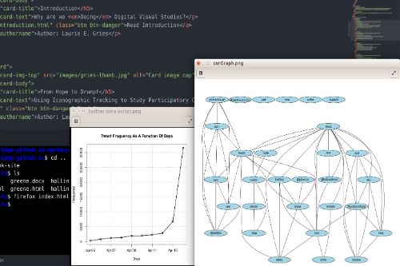

Overview of Doing Digital Visual Studies:
Edited by Laurie E. Gries, Aaron Beveridge, and Blake Hallinan
This section of text is placed here to provide a few short sentences to describe the collection. Somthing that briefly introduces it for people who happen to simply follow a link here, having no clue what the book is actually about. And then one last sentence here summing things up.
From the Editors:
The introduction to Doing Digital Visual Studies, written by Gries and Beveridge, blah blah blah one or two sentences of description here to tell readers why the intro is worth their time. And one more sentence here.

